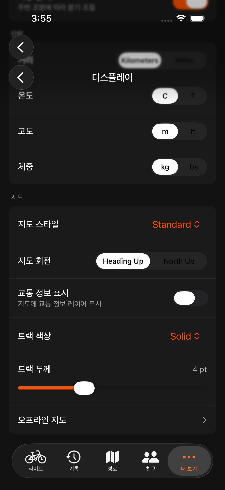

Orider iOS는 Apple 지도(MapKit)를 사용합니다. 라이딩 중 지도 페이지에서 현재 위치, 진행 경로, 불러온 코스를 확인할 수 있습니다.

라이딩 환경에 맞는 지도 스타일을 선택하세요. 설정 → 디스플레이의 "지도 스타일"에서 변경할 수 있습니다.
| 유형 | 설명 | 추천 상황 |
|---|---|---|
| Standard (표준) | Apple 표준 도로 지도 | 일반 주행 |
| Satellite (위성) | 위성 항공 사진 | 지형·주변 확인 |
| Hybrid (하이브리드) | 위성 사진 + 도로/지명 라벨 | 위성 영상에 도로명까지 |
설정 → 디스플레이의 지도 영역에서 다음 옵션을 조정할 수 있습니다.
| 옵션 | 설명 |
|---|---|
| 지도 회전 (Heading Up / North Up) | Heading Up: 지도가 항상 이동 방향을 위로 향하도록 회전 — 내비게이션처럼 사용하기 편리. North Up: 북쪽이 항상 위. |
| 교통 정보 표시 (Show Traffic) | 지도에 실시간 교통량 레이어를 표시합니다. |
| 트랙 색상 (Track Color) | 주행 트랙(지나온 경로) 선의 색상. |
| 트랙 두께 (Track Width) | 주행 트랙 선의 굵기(pt). |
지정한 지역의 지도를 미리 내려받아 데이터 없이 사용하는 오프라인 지도는 iOS에서 준비 중입니다. 설정 → 디스플레이 → 오프라인 지도(Offline Maps)에 들어가면 향후 제공 예정 안내가 표시됩니다.